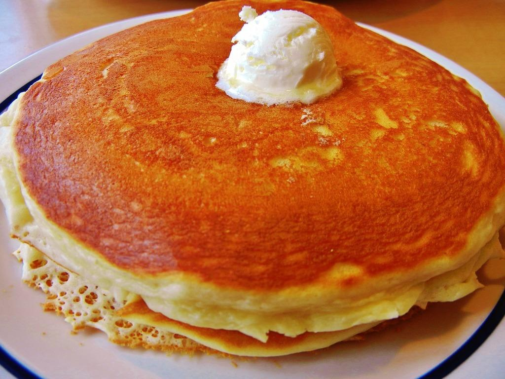

Pancakes

Description
This is one of my recipes for some good ol' fashioned pancakes.
Eating these pancakes will transport you back to a time when
you were in the kitchen with mom or grandma.
Ingredients
- 1 1/2 cups flour
- 3 1/2 teaspoons baking powder
- 1 tablespoon sugar
- 1 1/4 cup milk
- 3 tablespoons butter
- 1 egg
Steps
- Mix dry ingredients together in a large bowl.
- Make a well in the center, and add melted butter, milk,
and egg. Mix until smooth, do not overmix
- Heat griddle to medium-high heat, and lightly oil. Pour
1/4 cup of batter for each pancake.
- Cook until bubbles form, then flip until browned on other side.
- Serve with some butter and maple syrup, and enjoy!
Home